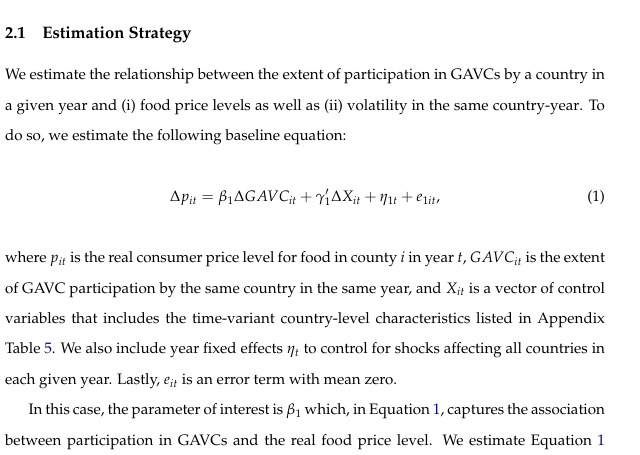
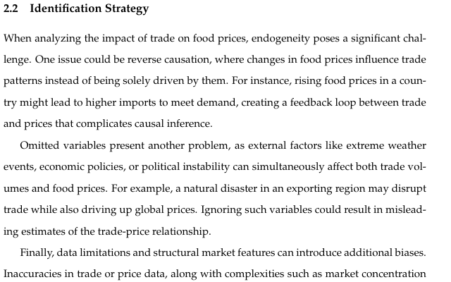
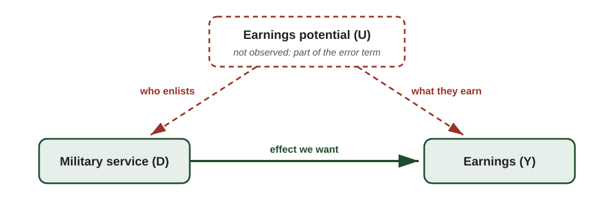
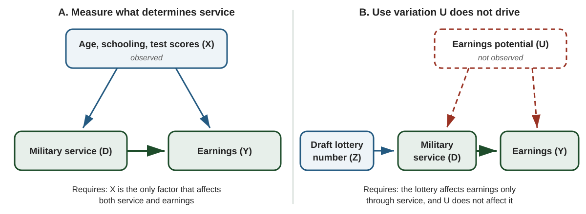

AREC 570 / ECON 530 · Unit 6
Assigned
Also used in these slides
Readings and course handouts are available on Canvas.
A map of methods, a decision tree, the four choices every empirical strategy states, structural estimation details for 6.2, and the climate example we use today. Use it as a reference while writing.
Bellemare calls this section the Empirical Framework, and some papers place it before the data section (Bellemare 2020).
Estimation strategy
The equations, the estimator, and how inference is done
Identification strategy
The feature of the data that supports a causal interpretation, and what threatens it
Use these as the two parts of your section (Bellemare 2020).


| Subsection | Question | Where the answer appears |
|---|---|---|
| Estimation strategy | 1. What is the relationship of interest? | The estimating equation and the parameter of interest |
| 2. How will you measure uncertainty? | The estimator, the standard errors, the clustering level, and why | |
| Identification strategy | 3. Is that relationship causal? | Whether the parameter is causal, and if not, what it describes |
| 4. What experiment would ideally measure it? | The effect you are trying to estimate | |
| 5. What variation identifies it, and what must be true of that variation? | The identifying assumption | |
| 6. What could make the identifying assumption fail? | The threats, and the design choice or robustness check that handles each |
Adapted from Angrist and Pischke (2009), Chapter 1, and Bellemare (2020), Section 5.
Source: Bellemare (2020), Section 5.1.
| Unit of observation | Key | |
|---|---|---|
| What it is | What one row represents, in words | The field or fields whose values are unique for every row |
| Panel weather model | A county in a year | County FIPS code and year |
| Price-gouging data (Lecture 5.5) | One product at one store in one week | Store, product, and week identifiers |
| Where it appears | The data section and the equation’s subscripts | The code that builds and merges the data |
The unit tells the reader what each row means. The key lets you check that there is exactly one row per unit before you estimate (Gentzkow and Shapiro 2014).
Source: Bellemare (2020), Section 5.1.

A comparison of veterans and nonveterans picks up both the effect and the path through earnings potential. With unlimited data it still cannot separate them (Jurajda 2007, Example 1.1).

| Threat | What it means | Common responses |
|---|---|---|
| Reverse causality | The outcome affects the treatment | Measure treatment before the outcome; use an instrument |
| Unobserved heterogeneity | An omitted factor affects both treatment and outcome | Fixed effects, controls, or a design that holds the factor constant |
| Measurement error | The treatment is recorded with error; classical error biases the estimate toward zero | A second measure; an instrument |
| Spillovers | One unit’s treatment affects another unit’s outcome, now or later | Define units so spillovers stay within them; test for them |
Source: Bellemare (2020), Section 5.2.
Source: Bellemare (2020), Sections 5.1 and 5.2.
A robustness check asks whether your choices matter. A sensitivity analysis asks how wrong your assumption could be.
Question: How will a warmer climate affect U.S. agriculture?
| Question | Ricardian | Panel weather | Long differences |
|---|---|---|---|
| 1. What is the relationship of interest? | |||
| 2. How will you measure uncertainty? | |||
| 3. Is that relationship causal? | |||
| 4. What experiment would ideally measure it? | |||
| 5. What variation identifies it, and what must be true of that variation? | |||
| 6. What could make the identifying assumption fail? |
We fill in one column at a time. Each design responds to a weakness in the one before it.
1. Relationship of interest: the long-run effect of climate on land values, including adaptation (Mendelsohn et al. 1994)
1. Relationship of interest: the short-run response of yields or profits to weather (Deschênes and Greenstone 2007; Schlenker and Roberts 2009)
Farmers cannot fully adapt to one hot year, so the long-run effect can be larger or smaller than this estimate (Timmins and Schlenker 2009).
1. Relationship of interest: the response to gradual climate change, including adaptation (Burke and Emerick 2016)
| Question | Ricardian | Panel weather | Long differences |
|---|---|---|---|
| 1. What is the relationship of interest? | Long-run effect on land values | Short-run response to weather | Response to gradual change |
| 2. How will you measure uncertainty? | Errors correlated across space | Errors correlated across space | Fewer observations; errors correlated across space |
| 3. Is that relationship causal? | Yes, if the identifying assumption holds | Yes, if the identifying assumption holds | Yes, if the identifying assumption holds |
| 4. What experiment would ideally measure it? | Different climates long ago | A random hot or cool year | A slowly warming climate |
| 5. What variation identifies it, and what must be true of that variation? | Across counties; no omitted factor varies with climate | Within a county across years; weather deviations as good as random | Trends within a state; unrelated to other outcome trends |
| 6. What could make the identifying assumption fail? | Omitted factors such as irrigation | Measurement error; price spillovers | Other trends that move with climate |
| Threat | In the panel weather model |
|---|---|
| Reverse causality | Farm output does not change the weather |
| Unobserved heterogeneity | County effects absorb fixed differences; year effects absorb national shocks |
| Measurement error | Gridded weather misses farm conditions; check a second weather data set |
| Spillovers | Year effects absorb national price changes, so the estimate excludes them |
This applies the four threats to one design. Each row needs an answer: the threat does not apply, the design handles it, or a robustness check tests it.
\section{Empirical Strategy}
\subsection{Estimation Strategy}
% What is the relationship of interest?
% equation, every term defined, parameter of interest
% How will you measure uncertainty?
% standard errors, clustering level, and why
\subsection{Identification Strategy}
% Is that relationship causal?
% What experiment would ideally measure it?
% What variation identifies it, and what must be true of that variation?
% What could make the identifying assumption fail?
% each threat, and the design choice or robustness check that handles itLines that start with % do not appear in the compiled PDF. In Word, use comments; in Quarto or Markdown, use <!-- -->.
For your own proposal:
AREC 570 / ECON 530 · Methodology of Economic Research